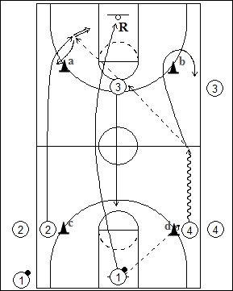
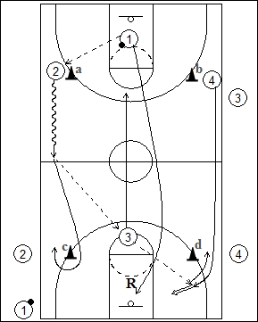

Catégorie : FASTBREAK (Fb-015)
Déroulement
- Quatre files de joueurs. Une au milieu d’une baseline avec ballons; deux dans le même demi-terrain de part et d’autre à hauteur de la ligne des lancers-francs (près des cônes c et d); un joueur à la ligne des trois points opposée (avec file d’attente à l’extérieur du terrain).
- Le premier joueur 1 passe au premier de la file 4 qui dribble vers la ligne médiane; là, il passe à 3 qui prolonge vers le premier joueur de la file 2 pour un jump shoot. Aussitôt après sa passe, le joueur 3 va vers la ligne des trois points opposée. Le premier joueur de la file 1 effectue le rebond. Le premier de la file 2 vient à hauteur du cône a et le premier de la file 4 contourne le cône b.

- Le même mouvement recommence vers le panneau de départ. 1 passe à 2 qui dribble jusqu’à la ligne médiane, puis passe à 3 qui prolonge vers 4 pour un jump shoot.
- Les joueurs reprennent leurs positions de départ avec 1 qui réalise le nouveau rebond, 3 à la ligne des lancers-francs opposée, 2 et 4 respectivement près des cônes c et d.
Coaching points
- Réaliser trois aller-retour avant de quitter le terrain.
- On peut travailler par postes ou on peut demander aux joueurs de passer dans toutes les files.
- Toujours réaliser la première passe du même côté (gauche ou droit).